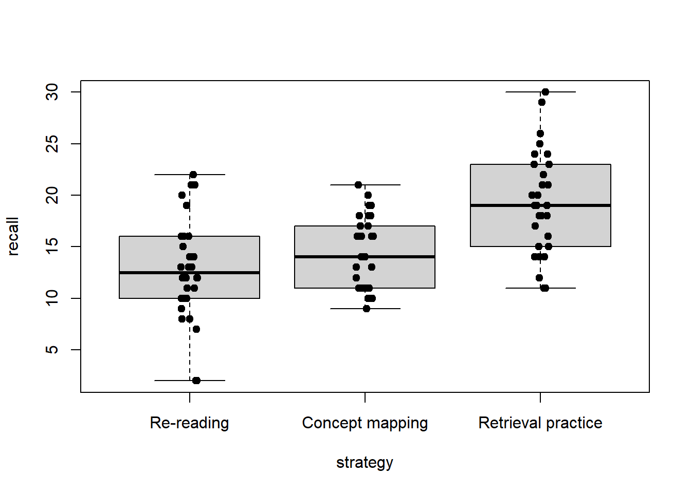
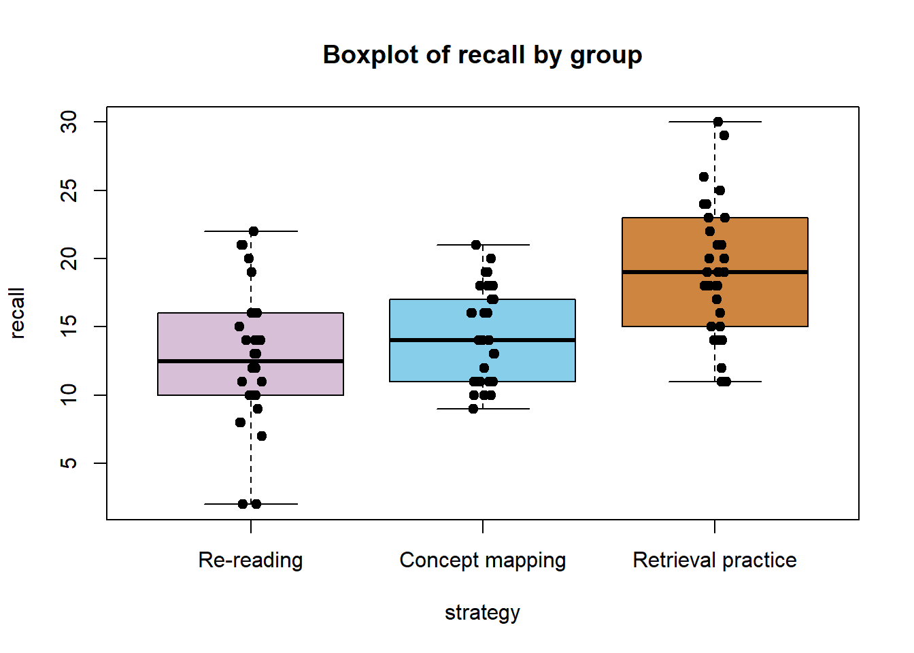
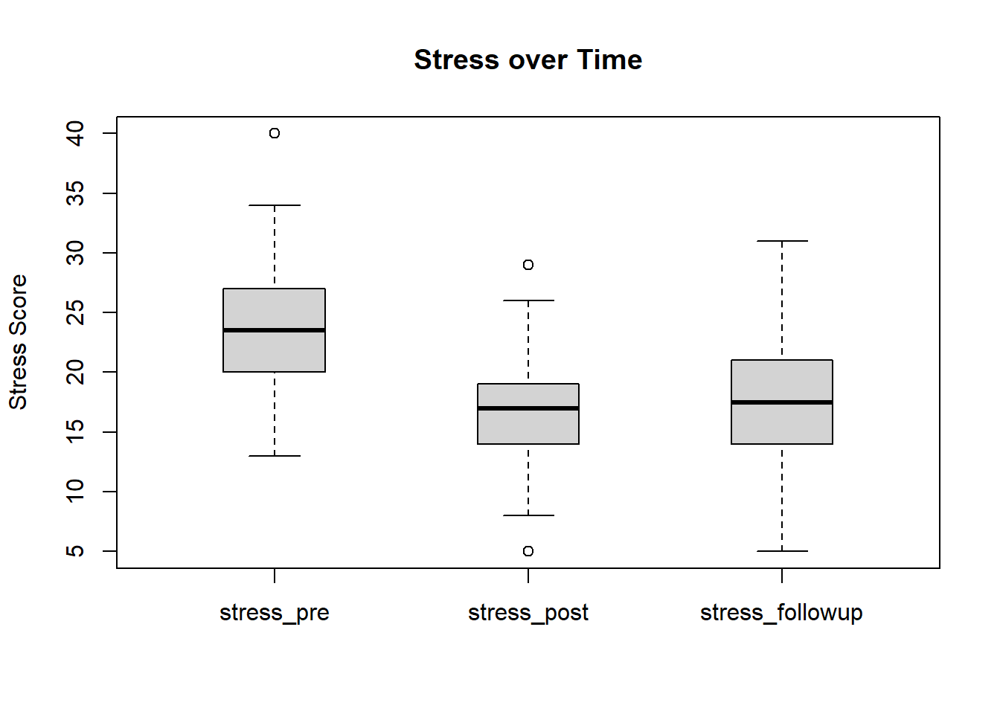
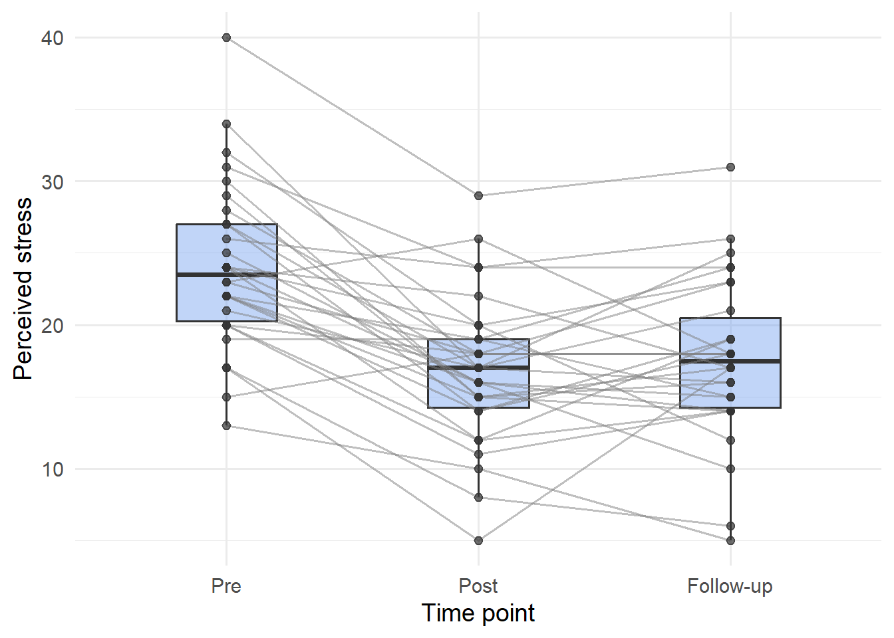
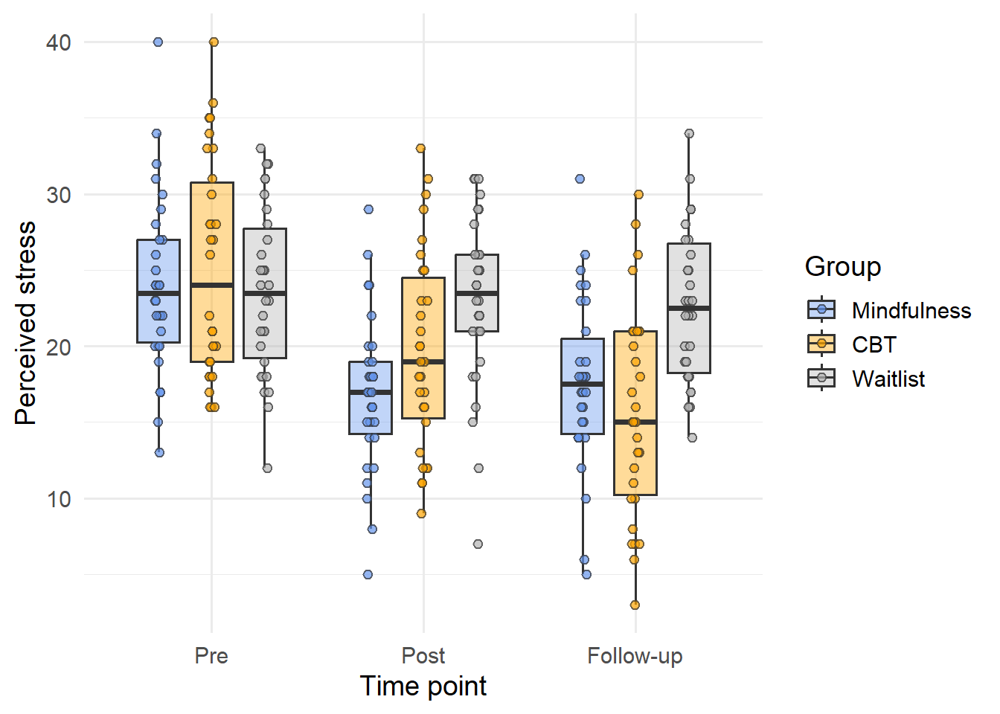

df <- read.csv("studyStrategyData.csv")PS71020_Unit3_Homework
A Review of Basic Statistical Tests
Learning Outcomes:
1 - Use RStudio to perform a one way ANOVA and post-hoc tests
2 - Use RStudio to perform a repeated measures ANOVA
3 - Use RStudio to perform a mixed ANOVA
4 - Learn the standard way of reporting the results of these statistical tests and extracting the values from RStudio output
Materials Used:
We will use the packages tidyr, car, pysch, rstatix, ggplot2, these are already installed on the RStudio Server but if you are working on your own Laptop you may need to install it.
SECTION A. ONE-WAY BETWEEN SUBJECTS ANOVA
The data set in studyStrategyData.csv comes from an experiment in which 90 students read the same passage on the history of psychometrics, then are randomly assigned to one of three ways of studying it for 20 minutes (30 students per group):
1 - Re-reading - read the passage again
2 - Concept mapping - draw a diagram linking the key ideas
3 - Retrieval practice - close the passage and write down what they remember
One week later everyone takes the same recall test (30 questions).
The data can be found on the VLE in this week’s homework files section or there is a direct download here Github Link
Read the data from the .csv file.
Set up the factors, since these are already specified as strings (letters instead of numbers), we can just use these as the levels, previously we had been dealing with factors with levels represented by numbers and labels represented by strings.
df$strategy <- factor(df$strategy, levels = c("Re-reading",
"Concept mapping",
"Retrieval practice"))What would the formula be to look at the effect of strategy on recall?
aovFormula <- recall ~ strategy
We can the carry out our assumption checks.
library(car)Loading required package: carDataleveneTest(aovFormula,df)Levene's Test for Homogeneity of Variance (center = median)
Df F value Pr(>F)
group 2 0.8567 0.4281
87 What assumption does levene’s test check? And what does the result here indicate
Homogeneity of variance, the result is not significant so the assumption holds.
We can build our ANOVA model using the aov() function, remember to assign the output to a variable so we can use it in subsequent steps, such as getting a summary.
mdl <- aov(aovFormula,df)The mdl object contains various bits of information, just like a dataframe we can access these using the $ symbol. One of the most useful one is mdl$residuals which contains the residuals of the ANOVA model (the error term). One of the key assumptions of an ANOVA is that these are normally distributed.
What code would we use to test this assumption and produce the results seen below? What do the results indicate?
The code is: shapiro.test(mdl$residuals)
The result is not significant (p = 0.82) so the assumption is not violated.
Shapiro-Wilk normality test
data: mdl$residuals
W = 0.99132, p-value = 0.8232Below is how to get an easy to read version of the ANOVA results:
summary(mdl) Df Sum Sq Mean Sq F value Pr(>F)
strategy 2 671 335.5 16.53 8.21e-07 ***
Residuals 87 1765 20.3
---
Signif. codes: 0 '***' 0.001 '**' 0.01 '*' 0.05 '.' 0.1 ' ' 1Post-hoc tests and grouped descriptive statistics:
library(psych)
Attaching package: 'psych'The following object is masked from 'package:car':
logitTukeyHSD(mdl) Tukey multiple comparisons of means
95% family-wise confidence level
Fit: aov(formula = aovFormula, data = df)
$strategy
diff lwr upr p adj
Concept mapping-Re-reading 1.633333 -1.140024 4.406691 0.3431459
Retrieval practice-Re-reading 6.433333 3.659976 9.206691 0.0000010
Retrieval practice-Concept mapping 4.800000 2.026643 7.573357 0.0002458describeBy(df$recall, df$strategy)
Descriptive statistics by group
group: Re-reading
vars n mean sd median trimmed mad min max range skew kurtosis se
X1 1 30 12.77 4.95 12.5 12.83 3.71 2 22 20 -0.11 -0.19 0.9
------------------------------------------------------------
group: Concept mapping
vars n mean sd median trimmed mad min max range skew kurtosis se
X1 1 30 14.4 3.47 14 14.29 4.45 9 21 12 0.15 -1.34 0.63
------------------------------------------------------------
group: Retrieval practice
vars n mean sd median trimmed mad min max range skew kurtosis se
X1 1 30 19.2 4.94 19 19.04 5.93 11 30 19 0.27 -0.62 0.9Effect size:
library(rstatix)
Attaching package: 'rstatix'The following object is masked from 'package:stats':
filtereta_squared(mdl) strategy
0.2753969 Write up the results in a standard format for a report:
A one-way between-subjects ANOVA showed a significant effect of study strategy on delayed recall, F(2, 87) = 16.53, p < .001, η² = .28. Tukey HSD post hoc comparisons showed that retrieval practice (M = 19.2, SD = 4.94) produced significantly higher recall than both re-reading (M = 12.77, SD = 4.95) p < .001 and concept mapping (M = 14.40, SD = 3.47) p < .001. Re-reading and concept mapping did not differ significantly (Mdiff = 1.63, p = .343).
Finally we can use the code below to create a boxplot with overlayed points:
boxplot(aovFormula, data = df, outline = FALSE)
stripchart(aovFormula, data = df, vertical = TRUE, method = "jitter", jitter = 0.05, pch = 19, add = TRUE)
Does the boxplot support the results of the statistical test?
Yes, it shows that retrieval practice has higher recall than the other two groups, but that the other groups are very similar. These are in line with a significant ANOVA and the pattern observed in the post hoc tests. Also the variance in each group looks similar according to the boxplot, this matches the lack of significance in Levene’s test.
Try to edit the code used for the figure to give each bar a difference colour and give the figure a title.
boxplot(aovFormula, data = df, main = "Boxplot of recall by group", col = c("thistle","skyblue","peru" ),outline = FALSE)
stripchart(aovFormula, data = df, vertical = TRUE, method = "jitter", jitter = 0.05, pch = 19, add = TRUE)
SECTION B. REPEATED MEASURES ANOVA
The data for this section is from a fake mindfulness intervention study in students. 30 students filled out the Perceived Stress Scale. The scale ranges from 0-40 with higher scores indicating higher stress levels. The students completed the scale at 3 time points:
1 - Before the intervention stress_pre
2 - Immediately after the intervention stress_post
3 - One week later stress_followup
The id of the participant is also included as a variable. The file is stress_repeated_1x3.csv and can be found inthe homework section of the VLE or you can download directly from here: Github Link.
rm(list = ls()) #clear the environment
df <- read.csv("stress_repeated_1x3.csv")What is the key difference between a 1x3 between subjects ANOVA and a 1x3 repeated measures ANOVA?
In a between subjects design each participant only takes part in one condition, in a repeated measures design each participant is measured in each condition/time point.
The data is currently in wide format, however, the function from the rstatix package that we will use are designed for data in long format. Below is the code required to change the format of the data. Take some time to have a look at each of the input arguments to understand what is going on.
library(tidyr)
dfLong <- pivot_longer(df, cols = starts_with("stress"), names_to = "Time", values_to = "Score")
# we still need to properly set up our factor variable
dfLong$Time <- factor(dfLong$Time,
levels = c("stress_pre", "stress_post", "stress_followup"),
labels = c("Pre", "Post", "Follow-up"))What does the cols = input argument refer to?
The are the columns that we want to get the data from, here I’ve used a useful shorthand method starts_with() that will find all columns that have names that start with “stress”. However, we could have used c("stress_pre","stress_post","stress_followup"). To accomplish the same thing. Notice that we haven’t included the id variable in this list.
What does the names_to = input argument refer to?
This is where the old column titles are going to be stored in a new column called dfLong$Time to label which time each bit of data came from.
What does the values_to = input argument refer to?
This is where the questionnaire scores are going to be stored in a new column called dfLong$Score to contain the bit of data associated with that id and that Time.
It is possible to use the base R aov() function to perform a repeated measures ANOVA. You can see how this is done in Tutorial 5. However, the rstatix package provides us with some useful additional function for effect size so we are going to use it to perform the ANOVA as well. Also if you look at the help for functions in this package like anova_test() it contains hyperlinks to some useful tutorials and code examples for running various examples of these analyses.
library(rstatix)
res <- anova_test(data = dfLong, dv = Score, wid = id,
within = Time, effect.size = "pes")
res #print the result to screenANOVA Table (type III tests)
$ANOVA
Effect DFn DFd F p p<.05 pes
1 Time 2 58 38.947 1.89e-11 * 0.573
$`Mauchly's Test for Sphericity`
Effect W p p<.05
1 Time 0.987 0.838
$`Sphericity Corrections`
Effect GGe DF[GG] p[GG] p[GG]<.05 HFe DF[HF] p[HF]
1 Time 0.988 1.98, 57.28 2.46e-11 * 1.059 2.12, 61.44 1.89e-11
p[HF]<.05
1 *In the code above: The dv = argument specifies which column in dfLong to use as the Dependent Variable. The wid = argument specifies which variable indicates which data comes from the same subject. The within = argument specifies which variable is the within subjects factor. The effect.size = "pes" specifies that we want our effect size measure to be partial eta2.
Looking at the output, multiple things are returned within res, including Mauchly’s Test For Sphericity. What is this test checking and has the assumption been violated in this case?
Sphericity is the assumption that the differences between pairs of the time points all have equal variances. In this case the test is not significant p = 0.84 and the assumption is not violated. If it had been violated we would have used a correction such as Greenhouse-Geiser to account for this.
We can also use another very useful function from rstatix called get_anova_table(). This returns the ANOVA table and will automatically apply a correction (GG by default) if the sphericity test is violated.
get_anova_table(res)ANOVA Table (type III tests)
Effect DFn DFd F p p<.05 pes
1 Time 2 58 38.947 1.89e-11 * 0.573What is a telltale sign that no correction has been applied here?
Both the degrees of freedom values DFn and DFd are integers (2,58). The corrections work by adjusting these and rarely return integers. You can see this in the res$Sphericity Corrections` table in DF[GG] and DF[HF].
We have a significant ANOVA with p<0.001, is that all we need to check?
No, we know that there is an effect of Time on Score but we don’t know which timepoints differ from each other so we need to follow-up with post-hoc tests. In a repeated measures ANOVA these are pairwise t-tests (as the data are dependent).
The rstatix package is useful here as it contains two functions that can perform this test and also calculate the Cohen’s D values for these comparisons. As we are conducting multiple tests we need to apply what is called a multiple comparison correction. When we performed a one-way between subjects ANOVA we used the function TukeyHSD() to apply this correction, here we will use a bonferroni correction.
pwc <- pairwise_t_test(dfLong, Score ~ Time,
paired = TRUE,
p.adjust.method = "bonferroni")
pwc# A tibble: 3 × 10
.y. group1 group2 n1 n2 statistic df p p.adj p.adj.signif
* <chr> <chr> <chr> <int> <int> <dbl> <dbl> <dbl> <dbl> <chr>
1 Score Pre Post 30 30 7.75 29 1.51e-8 4.54e-8 ****
2 Score Pre Follow-… 30 30 7.06 29 9.08e-8 2.72e-7 ****
3 Score Post Follow-… 30 30 -0.866 29 3.94e-1 1 e+0 ns #calculate Cohen's D
pwd <- cohens_d(dfLong, Score ~ Time, paired = TRUE)
pwd# A tibble: 3 × 7
.y. group1 group2 effsize n1 n2 magnitude
* <chr> <chr> <chr> <dbl> <int> <int> <ord>
1 Score Pre Post 1.42 30 30 large
2 Score Pre Follow-up 1.29 30 30 large
3 Score Post Follow-up -0.158 30 30 negligible#get descriptive statistics
get_summary_stats(df, stress_pre, stress_post, stress_followup, type = "mean_sd")# A tibble: 3 × 4
variable n mean sd
<fct> <dbl> <dbl> <dbl>
1 stress_pre 30 24.0 5.78
2 stress_post 30 16.8 5.15
3 stress_followup 30 17.6 5.62Which comparisons show a significant difference?
Both followup and post are significantly different from pre, but they are not different from each other. This suggests the intervention changed the scores but that they did not change between the post and followup periods.
Write out the results of the tests in the standard APA format:
A one-way repeated measures ANOVA showed a significant effect of time on perceived stress, F(2, 58) = 38.95, p < .001, partial η² = .57. Mauchly’s test indicated that the assumption of sphericity was met, W = .99, p = .838, so no correction was applied. Bonferroni-adjusted paired comparisons showed that stress was significantly lower post-programme (M = 16.83, SD = 5.15) than at baseline (M = 24.03, SD = 5.78), t(29) = −7.75, p < .001, d = −1.42, and significantly lower at follow-up (M = 17.57, SD = 5.62) than at baseline, t(29) = −7.06, p < .001, d = −1.29. Stress at follow-up did not differ significantly from stress post-programme, t(29) = 0.87, p > .999, d = 0.16. Stress therefore fell after the programme and the reduction was maintained over one week.
We can create a simple boxplot for this using the following code:
boxplot(df[, c("stress_pre", "stress_post", "stress_followup")],
main = "Stress over Time", ylab = "Stress Score",
boxwex = 0.4)
However, by using the package ggplot2 we can create much nicer ways of displaying this. Don’t worry if this code appears confusing, try to edit parts of it like the colours to understand what the individual lines do.
library(ggplot2)
Attaching package: 'ggplot2'The following objects are masked from 'package:psych':
%+%, alphaggplot(dfLong, aes(x = Time, y = Score)) +
geom_boxplot(width = 0.4, outlier.shape = NA,
fill = "cornflowerblue", alpha = 0.4) +
geom_line(aes(group = id), colour = "grey50", alpha = 0.5) +
geom_point(colour = "grey20", alpha = 0.7, size = 1.8) +
labs(x = "Time point", y = "Perceived stress") +
theme_minimal(base_size = 14)
SECTION C. MIXED-ANOVA
We will now look at a data set that contains a within subject IV as well as a between subjects IV.
The data for this section is from a fake mindfulness intervention study in students. 90 students filled out the Perceived Stress Scale. The scale ranges from 0-40 with higher scores indicating higher stress levels. The students completed the scale at 3 time points:
1 - Before the intervention stress_pre
2 - Immediately after the intervention stress_post
3 - One week later stress_followup
4 - group
There were 3 separate groups of students, the Mindfulness group is identical to those in the previous analysis. However, there are 30 students who underwent CBT, and another 30 who were on the waitlist for receiving an intervention.
The id of the participant is also included as a variable. The file is stress_mixed_3x3.csv and can be found in the homework section of the VLE or you can download directly from here: Github Link.
rm(list = ls()) #clear the environment
df <- read.csv("stress_mixed_3x3.csv")In this study what is the between subjects IV and what is the within subjects IV?
Time is the within subjects IV: all participants were measured at each of the 3 timepoints. group is the between subjects IV: each student only belonged to one group.
We again need to change the format of our data set to be long. The code to do this is the same as before, the only addition is that we need to also set up our group variable as a factor.
library(tidyr)
dfLong <- pivot_longer(df, cols = starts_with("stress"), names_to = "Time", values_to = "Score")
# we still need to properly set up our factor variable
dfLong$Time <- factor(dfLong$Time,
levels = c("stress_pre", "stress_post", "stress_followup"),
labels = c("Pre", "Post", "Follow-up"))
#now we need to do the same for the group variable.
dfLong$group <- factor(dfLong$group,
levels = c("Mindfulness", "CBT", "Waitlist"),
)
head(dfLong)# A tibble: 6 × 4
id group Time Score
<int> <fct> <fct> <int>
1 1 Mindfulness Pre 17
2 1 Mindfulness Post 8
3 1 Mindfulness Follow-up 6
4 2 Mindfulness Pre 21
5 2 Mindfulness Post 17
6 2 Mindfulness Follow-up 25Here is some very similar code to create the ggplot figure. Compare this code to the earlier one for the one way repeated measures ANOVA.
ggplot(dfLong, aes(x = Time, y = Score, fill = group)) +
geom_boxplot(width = 0.6, outlier.shape = NA, alpha = 0.4,
position = position_dodge(width = 0.75)) +
geom_point(shape = 21, colour = "grey20", alpha = 0.7, size = 1.8,
position = position_jitterdodge(jitter.width = 0.1,
dodge.width = 0.75)) +
scale_fill_manual(values = c("cornflowerblue", "orange","grey70")) +
labs(x = "Time point", y = "Perceived stress", fill = "Group") +
theme_minimal(base_size = 14)
There is no need to fully understand what is going on but what are some differences you can spot?
aes(x = Time, y = Score, fill = group)
This used to be aes(x = Time, y = Score), now because we want to fill the boxplots with different colours based on group, we add fill = group as the last input.
geom_line(aes(group = id), colour = "grey50", alpha = 0.5) is no longer there, this is because we don’t want to draw any connecting lines anymore as they are very hard to follow in this case.
scale_fill_manual(values = c("cornflowerblue", "orange","grey70")) has been introduced, this is what we use to set out the colours of each of the groups.
labs(x = "Time point", y = "Perceived stress", fill = "Group") has also expanded to include the fact that we are colouring by group.
Both the geom_boxplot() and geom_point() functions have an extra argument with position =. In the case of the boxplot this sets the boxplots to ‘dodge’ so that the three groups at one timepoint they don’t overlap. In the case of the points, a ‘jitter’ is applied (the random left/right offsets of the individual points).
Try playing around with some aspects of the code such as the colours, jitter size etc.
What patterns can we see in the data?
In the pre Time point, all three groups appear to be at similar level of stress. However, in both the post and followup timepoints the Waitlist groups seems to have not changed from pre levels, but the other two groups have reduced. It’s unclear if the pattern of the CBT and mindfulness groups are different enough to be signficant but there is a hint that CBT reduces even more at followup. Also the CBT group appears to have higher variance at all three time points.
Before running the ANOVA we need to check some assumptions, we will be using leveneTest() from the car package as we did in the lab. However, in this case we need to check if the homogeneity of variances between the groups is ok at all three timepoints seperately. To do this we are going to use the by() function. In the lab we used by() to apply the shapiro.test() function to each group separately. Here it is a little bit more complex but the idea is the same:
library(car)
by(dfLong, dfLong$Time, function(d) leveneTest(Score ~ group, data = d))dfLong$Time: Pre
Levene's Test for Homogeneity of Variance (center = median)
Df F value Pr(>F)
group 2 3.1856 0.04622 *
87
---
Signif. codes: 0 '***' 0.001 '**' 0.01 '*' 0.05 '.' 0.1 ' ' 1
------------------------------------------------------------
dfLong$Time: Post
Levene's Test for Homogeneity of Variance (center = median)
Df F value Pr(>F)
group 2 1.296 0.2789
87
------------------------------------------------------------
dfLong$Time: Follow-up
Levene's Test for Homogeneity of Variance (center = median)
Df F value Pr(>F)
group 2 1.7116 0.1866
87 The code tells R to apply Levene’s test to check if HoV holds for the Scores in different groups with the formula Score ~ group. The second input into by() tells it to do this separately at each time point. The reason we need to use the function(d) part here is that leveneTest() needs two input arguments and this is more complex to set up within the by() function.
What are the results of the levene’s tests?
The HoV assumption is met for both the post and followup timepoints. However, it is violated at the pre timepoint (p = 0.046). However, this is a very small violation and given the equal group sizes here is very unlikely to bias our results so we will continue as we are.
Previously we used the code: res <- anova_test(data = dfLong, dv = Score, wid = id, within = Time) to perform out 1x3 repeated measures ANOVA.
Try to read the help for anova_test() to see how to add a between subjects factor of group.
# The ANOVA itself reports Mauchly's test and the sphericity corrections
res <- anova_test(data = dfLong, dv = Score, wid = id,
between = group, within = Time, effect.size = "pes")
get_anova_table(res)ANOVA Table (type II tests)
Effect DFn DFd F p p<.05 pes
1 group 2 87 3.912 2.40e-02 * 0.083
2 Time 2 174 71.813 1.82e-23 * 0.452
3 group:Time 4 174 16.787 1.18e-11 * 0.278Try to read the help for anova_test() to see how to add a between subjects factor of group.
# The ANOVA itself reports Mauchly's test and the sphericity corrections
res <- anova_test(data = dfLong, dv = Score, wid = id,
between = group, within = Time, effect.size = "pes")
resANOVA Table (type II tests)
$ANOVA
Effect DFn DFd F p p<.05 pes
1 group 2 87 3.912 2.40e-02 * 0.083
2 Time 2 174 71.813 1.82e-23 * 0.452
3 group:Time 4 174 16.787 1.18e-11 * 0.278
$`Mauchly's Test for Sphericity`
Effect W p p<.05
1 Time 0.985 0.516
2 group:Time 0.985 0.516
$`Sphericity Corrections`
Effect GGe DF[GG] p[GG] p[GG]<.05 HFe DF[HF] p[HF]
1 Time 0.985 1.97, 171.38 3.76e-23 * 1.008 2.02, 175.32 1.82e-23
2 group:Time 0.985 3.94, 171.38 1.63e-11 * 1.008 4.03, 175.32 1.18e-11
p[HF]<.05
1 *
2 *get_anova_table(res)ANOVA Table (type II tests)
Effect DFn DFd F p p<.05 pes
1 group 2 87 3.912 2.40e-02 * 0.083
2 Time 2 174 71.813 1.82e-23 * 0.452
3 group:Time 4 174 16.787 1.18e-11 * 0.278Try to write up the results in a standard format:
A 3 (group: waitlist, mindfulness, CBT) × 3 (time: pre, post, follow-up) mixed ANOVA showed a significant main effect of group, F(2, 87) = 3.91, p = .024, partial η² = .08, and a significant main effect of time, F(2, 174) = 71.81, p < .001, partial η² = .45. These effects were qualified by a significant group × time interaction, F(4, 174) = 16.79, p < .001, partial η² = .28, indicating that the change in perceived stress over time differed between the three groups.